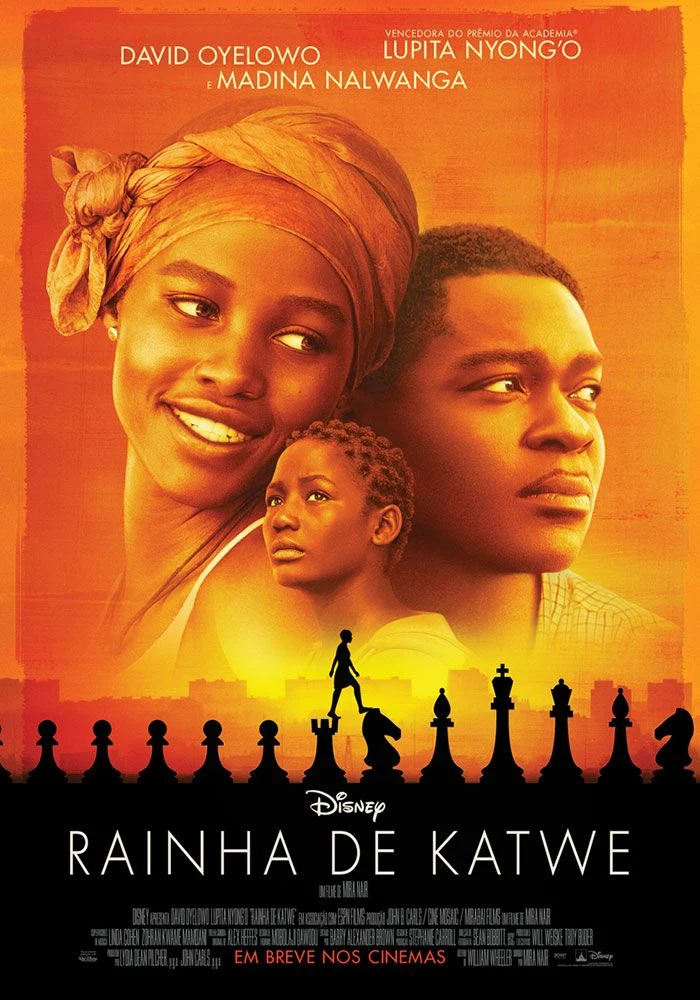

Dicas essenciais sobre xadrez
Antes de se preocupar com grandes estratégias ou nomes complicados de aberturas, é essencial aprender e praticar bons hábitos no tabuleiro. Pequenas atitudes fazem grande diferença, especialmente para quem está começando. Aqui vão algumas dicas valiosas para evoluir com segurança e inteligência no jogo:
- Dica 1: Toquei, joguei!
Nunca toque em uma peça se não for movê-la. Se encostar, é obrigado a jogar com ela.
- Dica 2: Domine o centro!
Casas centrais (d4, d5, e4, e5) dão controle e liberdade para suas peças.
- Dica 3: Roque cedo e com segurança
Protege o rei e conecta as torres. Evite mexer nos peões que o protegem depois disso.
- Dica 4: Desenvolva com inteligência
Comece com peão de e4 ou d4. Traga os cavalos antes dos bispos e evite mover a mesma peça duas vezes na abertura.
- Dica 5: Cuidado com trocas!
Não troque peças sem pensar no valor e no posicionamento final.
- Dica 6: Não traga a dama cedo
Ela é poderosa, mas virar alvo no início pode te atrapalhar.
- Dica 7: Pense no lance do adversário
Sempre reflita: “O que meu oponente pode fazer depois disso?”
Recomendações
Sites para praticar xadrez
Canais do YouTube sobre xadrez
Filmes e séries sobre xadrez
-

Rainha de Katwe – Baseado em uma história real, mostra a jornada de uma jovem de Uganda que se destaca no xadrez.
Disponível no: Disney+
-
O Gambito da Rainha (The Queen's Gambit) – Série de ficção sobre uma prodígio do xadrez enfrentando vícios e desafios pessoais.
Disponível no: Netflix
-

Magnus – Documentário sobre a ascensão de Magnus Carlsen no cenário mundial.
Disponível no: Amazon Prime Video